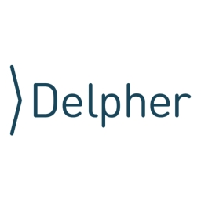
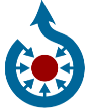

2.418 Wikipedia articles in 79 languages in which images from Delpher are used, grouped by language.
The Category:Media from Delpher contains a total of 62.318 images, of which 1.312 distinct
images are being used 2.682 times to illustrate the 2.418 articles listed below.
This data, including which exact images are used per article, is also available as an Excel file. More structured data formats (csv, json) will be added in the future.
This overview is based on this XML output of the GLAMorous tool d.d. 06-01-2026.
It was generated using the GLAMorousToHTML code.
Also see the documentation of this tool.
Available languages
Dutch (913)
English (308)
German (145)
Welsh (106)
Egyptian Arabic (104)
French (100)
Indonesian (78)
Russian (53)
West Frisian (51)
Romanian (45)
Spanish (44)
Italian (43)
Modern Standard Arabic (42)
Catalan (41)
Polish (28)
Nynorsk (22)
Swedish (22)
Malay (19)
Portuguese (19)
Ukrainian (18)
Czech (17)
Chinese (16)
Hebrew (16)
Persian (16)
Japanese (14)
Esperanto (10)
Hausa (9)
Basque (7)
Danish (6)
Hungarian (6)
Slovene (6)
Eastern Armenian (5)
Finnish (5)
Galician (5)
Greek (5)
Malagasy (5)
Turkish (5)
Balinese (4)
Serbian (4)
Afrikaans (3)
Bangla (3)
Korean (3)
Vietnamese (3)
Igbo (2)
Javanese (2)
Latin (2)
Limburgish (2)
Luxembourgish (2)
Papiamento (2)
Serbo-Croatian (2)
Uzbek (2)
Albanian (1)
Asturian (1)
Azerbaijani (1)
Banjar (1)
Bosnian (1)
Bulgarian (1)
Croatian (1)
Dutch Low Saxon (1)
Fula (1)
Gorontalo (1)
Haitian Creole (1)
Hindi (1)
Ido (1)
Kapampangan (1)
Low Saxon (1)
Macedonian (1)
Madurese (1)
Newar (1)
Occitan (1)
Ripuarian (1)
Slovak (1)
Southern Quechua (1)
Standard Estonian (1)
Sundanese (1)
Swahili (1)
West Flemish (1)
Yiddish (1)
Zeelandic (1)
Dutch (913)
16 december |
20 november |
3 oktoberfeest |
8 november |
Aan de oever van de Rotte |
Abraham Albert Hijmans van den Bergh |
Abraham Jacobus Frederik Fokker van Crayestein van Rengerskerke |
Abraham van Karnebeek |
Adolph Marius Karel Wolphgangh van Ittersum |
Adolphe Engers |
Adolphe Max |
Adriaan Boer |
Adriaan Gerhard |
Adriaan Jan Huijsman |
Adriaan Willem Weissman |
Agnieta Gijswijt |
Albert Jan Verbeek |
Albert Kluyskens |
Albert Kluyver |
Albert van Raalte |
Alberto Badaracco |
Albertus Nicolaas Fleskens |
Albertus de Jong |
Alexander Eppo van Voorst tot Voorst |
Alexander Voormolen |
Alexander de Savornin Lohman |
Alexander van Dedem |
Alexander van Sasse van Ysselt |
Alfred Rudolph Zimmerman |
Algemene Begraafplaats Kerkhoflaan |
Alibert Cornelis Visser van IJzendoorn |
Alida Tartaud-Klein |
Allard van der Borch van Verwolde (1842-1919) |
Allard van der Borch van Verwolde (1881-1944) |
Alphons Sassen |
Alphonse C.Ch.G. van Hemert |
Alphonsus Maria Josephus Ernestus Antonius van Lamsweerde |
Ambachtsschool (Maastricht) |
Amphora |
Andreas Everardus van Braam Houckgeest |
André Spoor (musicus) |
Anke Beenen |
Anna Lambrechts-Vos |
Anna Maria Kruijff |
Anna Paulownapolder |
Anna Sophia Polak |
Annemie Wolff |
Annie de Jong-Zondervan |
Anny Piscaer |
Anske Gerben Lamminga |
Anthony Brummelkamp (1839-1919) |
Anthony Ewoud Jan Nijsingh |
Antoine Arts |
Antoine van Nispen tot Pannerden |
Anton van Rooy |
Antoni Brants |
Antonie Roodhuyzen |
Antonius Everdinus van Kempen |
Antonius van Wijnbergen |
Antoon Derkzen van Angeren |
Apeldoorns Kanaal |
April-meistakingen |
Archiefkast met voorstellingen van de vrije kunsten en gebonden kunsten |
Arina Hugenholtz |
Arnhemsche Courant |
Arnold Hendrik de Hartog |
Arnold van Rossem |
Arnoldus Hyacinthus Maria van Berckel |
Arnoldus van Walsum (1890-1957) |
Arthur Boon |
Asser Benjamin Kleerekoper |
Au Tapis-Rouge |
August Daniel Frederik Willem Lichtenbelt |
August Willem Johan van Lanschot |
Auke Komter |
Balthasar van der Pol |
Bart Verhallen |
Bartholomeus Johannes Gerretson |
Bataafse vlag |
Bbhh |
Beata van Helsdingen-Schoevers |
Bedelen |
Begoniastraat 6 (Amsterdam) |
Ben Springer |
Berend Tobia Boeyinga |
Berhardina Midderigh-Bokhorst |
Bernard Diamant |
Bernard Tellegen |
Bernhard van den Sigtenhorst Meyer |
Bert Johan Ouëndag |
Bert van 't Hoff |
Bertha Elias |
Bertha Waszklewicz-van Schilfgaarde |
Bertha von Suttner |
Bertus Zuurbier |
Betsy Bakker-Nort |
Blackface |
Bobsleeën op de Olympische Winterspelen 1928 |
Boekenweek |
Bond van Orde door Hervorming |
Borculo |
Bram van Heel |
C.L.M. Robbers |
Carel Butter |
Carel Koopman |
Carel Oberstadt |
Carlos Van Sante |
Caroline Reboux |
Carolus Hubertus Leonardus Bontamps |
Chaams hoen |
Charivarius |
Charles-Alexis Terlinden |
Charles Karsten |
Charles Schnebbelie |
Charles T. Liernur |
Charles van Wijk |
Cheribon (residentie) |
Chris Beekman |
Christiaan IJnzonides |
Clara Asscher-Pinkhof |
Clementia Hiers |
Cobouw |
Coby Floor |
Coen Weerman |
Coenraad Lodewijk Walther Boer |
Coert Ebbinge Wubben |
Compositie in dissonanten |
Constant Maurits Ernst van Löben Sels |
Cor Alons |
Cor Gubbels |
Cor van Gelder |
Cornelis Baard |
Cornelis Bernardus Schuurman |
Cornelis Frans Jacobus Blooker (1852-1912) |
Cornelis Galesloot |
Cornelis Gijsbert Jan Vreedenburgh |
Cornelis Herman den Hertog |
Cornelis Jacob den Tex |
Cornelis Jan Snuif |
Cornelis Jol |
Cornelis Kuypers |
Cornelis Lely |
Cornelis van Doorn |
Cornelis van Eesteren |
Courante uyt Italien, Duytslandt, &c. |
Curt van de Sandt |
Cuypershuis |
DW B (tijdschrift) |
Daar zaten zeven kikkertjes |
Dada-tournee |
Dadaïsme |
Dagblad van Zuid-Holland en 's Gravenhage |
David Pièrre Giottino Humbert de Superville |
David van Dantzig |
De Athleet |
De Avondbode |
De Branding |
De Graafschapbode |
De Helmplanters |
De Jantjes (1922) |
De Jantjes (toneelstuk) |
De Lanscroon en De Liebaert |
De Vonk (verzetsblad) |
De Vonk (verzetsorganisatie) |
De Vrouw 1813-1913 |
De Zaanlander |
De smidse |
Delftsch Studenten Corps |
Derk Welt |
Dibbet Willem Peter Wisboom |
Dick van der Leeuw |
Dinah Kohnstamm |
Dirk Bos |
Dirk Bus |
Dirk Filarski |
Dirk Jan Struik |
Dirk Schermerhorn (ingenieur) |
Dirk de Klerk |
Dirk de Koning |
Dora de Louw |
Dorus Nijland |
Douwinus Johannes van Houten |
Duitse Keizerrijk |
Eau de Botot |
Edo Johannes Bergsma |
Eduard Cuypers (architect) |
Eduard Ellis van Raalte |
Eduard Fokker |
Eduard Jellinghaus |
Eduard Reeser |
Edwin Louis Teixeira de Mattos |
Edzard Tjarda van Starkenborgh Stachouwer (1859-1936) |
Eerke Albert Smidt |
Eerste Kamerverkiezingen 1923 |
Egbertus Johannes Beumer |
Egbertus Pelinck |
Eldert Johannes van Det |
Elias Melkman |
Elisabeth Zernike |
Elze van den Ban |
Emancipatiewet |
Emanuel Moresco |
Emil Hendrik Stieltjes |
Emile Alexis Marie van der Kun |
Emile Enthoven |
Emile Vinck |
Emile van Bosch |
Emile van Dievoet |
Emmy Kuster |
Engelbert Hendrik ter Kuile |
Erich Wichmann |
Ericus Gerhardus Verkade |
Ernst August Schwebel |
Ernst Cahn |
Ernst Leyden |
Ernst Steuerwald |
Esher Surrey |
Eugène Brands |
Evert van Ketwich Verschuur |
Exposities van Piet Mondriaan |
Exposities van Theo van Doesburg |
FC Blauw-Wit Amsterdam |
Fedora (hoed) |
Feethams |
Felix Vening Meinesz |
Ferdinand Verschoor van Nisse |
Floris Willem van Styrum (1855-1929) |
Focus (tijdschrift) |
Fokker C.IX |
Folkert Haanstra sr. |
Fons Windhausen |
Fort aan het Schiphol |
Fotojournalistiek |
Francis Henri van den Broek d’Obrenan |
Francis de Erdely |
Franciscus Jacobus Terwisscha van Scheltinga |
Frans Beelaerts van Blokland (1872-1956) |
Frans Bolsius |
Frans Cornelis Bake |
Frans Hasselaar |
Frans Jozef Feron |
Frans Langeveld |
Frans Smissaert |
Frederic Joseph Maria Anton Reekers |
Frederic Sophie Guillaume Bos |
Frederik August Stoett |
Frederik Louis Kleijn |
Frederik van Bylandt |
Fridolin Marinus Knobel |
Frits Bakker Schut |
Frits Koeberg |
G.H. Lantman |
Gedenkteken A. A. van Bergen IJzendoorn |
Geert van der Zwaag |
Geesje Mesdag-van Calcar |
Georg Rijken |
Georg Rueter |
George Auguste Vorsterman van Oyen |
George Buff |
Georgine Schwartze |
Gerard Anton van Hamel |
Gerard Hordijk |
Gerard Panhuysen |
Gerardus Jacobus Goekoop |
Gerardus Jacobus van Swaaij |
Gerardus Johannes Bisschop |
Gerhard Badrian |
Gerrit Adriaan Arnold Middelberg |
Gerrit Adriaan Bax (1911-1965) |
Gerrit Besselaar |
Gerrit Bramer |
Gerrit Elhorst |
Gerrit Gijsbertus van Everdingen |
Gerrit Haspels |
Gerrit Jan van den Broek |
Gerrit Jannink (politicus) |
Gerrit Jansen (burgemeester) |
Gerrit Johan Anne Schimmelpenninck |
Gerrit Rotman |
Gerrit van Blaaderen |
Geuchien Zijlma |
Gijs Waardenburg |
Gijsbert d'Aumale van Hardenbroek van Hardenbroek |
Gijsbertus Jaspers |
Gillis Johannis le Fèvre de Montigny (1837-1907) |
Giselle Kuster |
Giuseppe Occhialini |
Gonne Donker |
Goudsche Siroopfabriek |
Gouvernementsblad van de Kolonie Suriname |
Grand Hôtel du Lévrier et de l'Aigle Noir |
Greta Lobo |
Grietje Bijlsma |
Groninger Courant |
Grote Staat 5 |
Gustaaf Molengraaff |
Gustaaf van der Feltz (1853-1928) |
Gustave Louis Marie Hubert Ruijs de Beerenbrouck |
Guyanaplan |
HVV Hollandia |
Haagsche Courant |
Haagse Kunstkring |
Haarlemmerolie |
Han van Dam |
Harm Ellens |
Harmanus Johannes Groote Balderhaar ten Velde |
Harry Boda |
Ha’ischa : orgaan van den Joodschen Vrouwenraad in Nederland |
Heerderweg |
Heertjen Ubbo Bouwman |
Heij (rivier) |
Hein Israël Waterman |
Heinrich Sellmer |
Helene Goude |
Helenius de Cock |
Hendrik Andriessen |
Hendrik Anthonie Almoes |
Hendrik Banning |
Hendrik C. van Oort |
Hendrik Elias de Bruyn |
Hendrik Heyman |
Hendrik Johan Melgers |
Hendrik Lorentz |
Hendrik Martien Willem Werker |
Hendrik Spiekman |
Hendrik Thierry |
Hendrik de Iongh |
Hendrik de Vries (organist) |
Hendrik van Lier |
Hendrik van Oordt |
Hendrika Cornelia de Balbian Verster-Bolderheij |
Hendrika van der Pek |
Hendrikus Franciscus Petrus Maasland |
Henk Muller |
Henk van Kempen |
Henri Boot |
Henri Habert |
Henri Johan van der Schroeff |
Henri Louis Dekking |
Henri Marchant |
Henri Nicolaas ter Veen |
Henri Nolen |
Henri Scholtz |
Henri Schoonbrood |
Henri Staal (politicus) |
Henri Zagwijn |
Henri van Goudoever |
Henri van Lerven |
Henri van Nieuwenhoven |
Henricus Paulus Cornelis Bosch van Drakestein |
Henriëtte Kriebel |
Henriëtte Kuyper |
Henry Zwiers |
Hepkema's Courant |
Herman Jacob Kist (1836-1912) |
Herman Johannes den Hertog (schaker) |
Herman Koppeschaar |
Herman Poort |
Herman Rutters |
Herman Scholtens |
Hermanus Adrianus Nebbens Sterling |
Het Hert (brouwerij) |
Het Klaverblad (zeepfabriek) |
Het dagelijks nieuws |
Het lied der achttien dooden |
Hildo Krop |
Hindrik Hofstee Aukema |
Hockey op de Olympische Zomerspelen 1928 |
Hogeschool Van Hall Larenstein |
Hollandia (tijdschrift) |
Homoseksualiteit in nazi-Duitsland |
Hoofdfilm |
Hotel Derlon |
Hotel Du Casque |
Hubert Menten |
Hugo van Gijn |
Hugues Alexandre Sinclair de Rochemont |
Huldtoneel |
Hunkemöller |
IJsdam |
Ida Heijermans |
Iet van Feggelen |
Illegale pers in Nederland |
Inge Sørensen |
Intermediair Wetgevend Lichaam |
Internationaal Persmuseum |
Internationale (lied) |
Isaac Antoni van Roijen (1859-1938) |
Isaäc Burchard Diederik van den Berch van Heemstede |
Ivo Pannaggi |
J.J.P. van Boxtel |
J.V. de Groot |
Jaap Dooijewaard |
Jaap Vogelaar |
Jac. van Kempen |
Jac. van den Bosch |
Jacob Adriaan Kalff |
Jacob Adriaan Nicolaas Patijn |
Jacob Clay |
Jacob Menno Tienstra |
Jacob Willem Arriëns |
Jacob van Reenen |
Jacoba Repelaer van Driel |
Jacoba van Heemskerck |
Jacobus Antonius Nicolaas Travaglino |
Jacobus Johannes Canter Cremers |
Jacobus Joännes van Deinse |
Jacobus Lebret |
Jacobus Marinus Pijnacker Hordijk |
Jacqueline Hillen |
Jacques Davidson |
Jacques Oor |
Jacques Paul Delprat |
Jacques Turlings |
Jacques Van Aertselaer |
James Cohen van Elburg |
Jan Alouisius Lambertus Maria Loeff |
Jan Altink |
Jan Ankerman (politicus) |
Jan Bleys |
Jan Coops |
Jan Dirk van Wassenaer van Rosande |
Jan Duijs |
Jan Ensing |
Jan Franken Pzn. |
Jan Fresemann Tromp Meesters |
Jan Gerko Wiebenga |
Jan Gerrit Jordens |
Jan Gratama |
Jan Grauls (politicus) |
Jan Harm Weijns |
Jan Heemskerk (politicus) |
Jan Hemsing |
Jan Hendrik Joseph Beckers |
Jan Hendrik Wesseling |
Jan Hendrik de Boer |
Jan Hendrik de Waal Malefijt |
Jan Hermanus Besselaar |
Jan Hudig |
Jan Jacob Willinge (1849-1926) |
Jan Karel van der Haagen |
Jan Kater |
Jan Liebbe Bouma |
Jan Musch (toneel) |
Jan Philip de Bordes |
Jan Rinke |
Jan Samuel François van Hoogstraten |
Jan Schokking |
Jan Striening |
Jan Van Houtte |
Jan Voetelink |
Jan Willem Bonebakker |
Jan Willem Cornelis Tellegen (1859-1921) |
Jan Willem Gustaaf Stieneker |
Jan Willem Hugo Lambach |
Jan Willem IJzerman |
Jan Woltjer (classicus) |
Jan de Liefde (predikant) |
Jan ter Laan |
Jan van Alphen |
Jan van Best |
Jan van Teeffelen (architect) |
Jan van der Lande |
Jan van der Linden |
Jan van der Molen |
Janny van Wering |
Je Maintiendrai (krant) |
Jean Antoine Oor |
Jean Speetjens |
Jezuïeten-missies |
Jo Juda |
Jo Schreve-IJzerman |
Jo Teunissen-Waalboer |
Jo Thijsse |
Jo Turlings |
Jo van der Heijden |
Joannes Gerardus Antonius Rutten |
Joannes Jansen |
Joannes Sebastianus Jansen |
Johan Bothenius Lohman |
Johan Brautigam |
Johan Carel de Leeuw |
Johan Frans van Bemmelen |
Johan Heinrich Blum |
Johan Hugo Wicher Quirijn ter Spill |
Johan Kooper |
Johan Peter Wijtenhorst |
Johan Stein |
Johan Strootman |
Johan Wilhelm Welcker |
Johan Willem Georg Coops |
Johan van Hell |
Johan van Heurn (waterbouwkundige) |
Johan van Oldenbarnevelt |
Johannes Andries de Zwaan |
Johannes Antonius Veraart |
Johannes Bernardus Bernink |
Johannes Christiaan Cornelis Tonnet |
Johannes Conradus Bouwmeester |
Johannes Franciscus Jansen |
Johannes Gottlieb Bijl |
Johannes Hendricus Donner |
Johannes Hermanus Carstens |
Johannes Jurgens |
Johannes Krap |
Johannes Leendert van Soest |
Johannes Marcus Willem van Elzelingen |
Johannes Petrus Judocus Wierts |
Johannes Philippus Backx |
Johannes Wijnand Meyll |
Johannes Wytema |
Johannes van Oldenborgh |
Johannes van der Corput |
Jonas Ingenohl |
Joop Stotijn |
Joost van Vollenhoven (1866-1923) |
Jos. E. Vogt |
Josef Cohen |
Joseph Groenen |
Joseph Jacob Isaacson |
Josephine Baerveldt-Haver |
Josephus Hendrikus Bardoel |
Jozef Jan Pompe van Meerdervoort |
Jozef Muls |
Jozef Rondou |
Jules Cornelis van Randwijck |
Jules Moormann |
Julia Cuypers |
Julianapark (Hoorn) |
Jurjen Koksma |
Jérôme Leussink |
KIT-gebouw |
Kabinet-Colijn I |
Kabinet-Colijn II |
Kabinet-Colijn III |
Kabinet-De Geer II |
Kabinet-De Meester |
Kabinet-Gerbrandy I |
Kabinet-Gerbrandy II |
Kabinet-Heemskerk |
Kabinet-Mackay |
Kabinet-Ruijs de Beerenbrouck III |
Kabinetsformatie Nederland 1849 |
Kabinetsformatie Nederland 1901 |
Kapellerlaan |
Kapellerlaan 55-57 |
Karel Albert |
Kasteelruïne Lichtenberg |
Katharina Leopold |
Katholieke Illustratie |
Katholieke Leergangen |
Kees van Peursen |
Keizersgracht 143 |
Kinderliederen (liedboek) |
Kit Klein |
Klaas Dekker (burgemeester) |
Klaas Jaspers van den Akker |
Klaas Kater |
Klaas de Boer Czn. |
Ko Cossaar |
Koloniale tentoonstelling (Semarang) |
Koninklijk Concertgebouworkest |
Koninklijk Kabinet van Zeldzaamheden |
Koninklijke Amsterdamsche Zwemclub 1870 |
Koninklijke BAM Groep |
Koninklijke Sanders |
Kun je nog zingen, zing dan mee |
Kunstenaars die bijdroegen aan de inrichting van de Nieuw Amsterdam |
Kunstenaarsvereniging Laren-Blaricum |
Kunsthandel de Protector |
Lambach HL.I |
Lambach HL.II |
Lambert de Ram |
Lambertus Zijl |
Landstorm (KNIL) |
Laurens van Kuik |
Laurentius Nicolaas Deckers |
Leendert Bolle |
Leo Lauer |
Leo Octave Marie van Nispen tot Sevenaer |
Leo van Wensen |
Leonie Brandt |
Liauckama State |
Liemers (streek) |
Liernurstelsel |
Liesbeth Poolman-Meissner |
Lijst van Belgische ministers van Arbeid en Sociale Voorzorg |
Lijst van Nederlandse ministers van Buitenlandse Zaken |
Lijst van Nederlandse ministers van Justitie |
Lijst van bisschoppen van Paramaribo |
Lijst van burgemeesters van Amersfoort |
Lijst van burgemeesters van Amsterdam |
Lijst van burgemeesters van Brussel |
Lijst van burgemeesters van Helden |
Lijst van burgemeesters van Montfort |
Lijst van burgemeesters van Rotterdam |
Lijst van burgemeesters van Vught |
Lijst van burgemeesters van Westkapelle (Nederland) |
Lijst van eredoctoraten van de Radboud Universiteit Nijmegen |
Lijst van eredoctoraten van de Universiteit Utrecht |
Lijst van eredoctoraten van de Universiteit van Amsterdam |
Lijst van feministen |
Lijst van ontwerpen van Harry Elte |
Lijst van ontwerpen van Jan Wils |
Lijst van partijleiders van de CHU |
Lijst van personen overleden in 1947 |
Lijst van personen overleden in 1972 |
Lijst van personen overleden in 1978 |
Lijst van procureurs-generaal bij de Hoge Raad der Nederlanden |
Lijst van rectores magnifici van Tilburg University |
Lijst van rectores magnifici van de Radboud Universiteit Nijmegen |
Lijst van rectores magnifici van de Rijksuniversiteit Groningen |
Lijst van rectores magnifici van de Technische Universiteit Delft |
Lijst van rectores magnifici van de Vrije Universiteit Amsterdam |
Lijst van rijksmonumenten in Diepenheim |
Lijst van stadsarchitecten van Maastricht |
Lijst van voorzitters van de Tweede Kamer |
Lijst van werken van Tames Oud |
Lijst van werken van Theo van Doesburg |
Lili Green |
Lintjesaffaire |
Lips (sloten) |
Lode Sengers |
Lodewijk Ernst Visser |
Lodewijk Henrick Johan Mari van Asch van Wijck |
Lodewijk de Koninck |
Lou Asperslagh |
Lou Otten |
Louis de Vries (trompettist) |
Louise van Eeghen |
Maandblad der vereeniging voor verbetering van vrouwenkleeding |
Maandbulletin van het Nationaal Bureau voor Vrouwenarbeid |
Maarten Belzer |
Maarten Zwollo |
Manna de Wijs-Mouton |
Mannenadel |
Manus van der Ven |
Marcel van Grunsven |
Marie Adrianus van Nieukerken |
Marie Kuyken |
Marie van Eijsden-Vink |
Marinus Vreugde |
Marius Duintjer |
Marius Kerrebijn |
Marius van Haaften |
Martin Spanjaard |
Martin de Ras |
Martin van Waning |
Mathieu Lauweriks |
Mathilde Cohen Tervaert-Israëls |
Maup Mendels |
Maurits Anton Brants |
Maurits van Asch van Wijck |
Max Charles Emile Bongaerts |
Max Kloos |
Max Oróbio de Castro |
Max Raedecker |
Max Tetzner |
Mededeelingen van de Nederlandsche Vereeniging van Vrouwen met Academische opleiding |
Meinard Tydeman (1854-1916) |
Mello Sichterman |
Michael Petrus Arnoldus Meissen |
Michel Velleman |
Michiel Noordewier |
Miss Etam |
Museum Boijmans Van Beuningen |
Museum Willem II |
Museum van Kunstnijverheid (Den Haag) |
Mysteriën (roman) |
Nanne Sluis Pzn. |
Nederland op de Olympische Zomerspelen 1928 |
Nederlands-Indische kentekens |
Nederlands landskampioenschap voetbal 1895/96 |
Nederlandsche Lloyd |
Nederlandsche Maatschappij voor Havenwerken |
Nederlandse Bachvereniging |
Nederlandse Vrouwen Raad |
Nederlandse schepen op de rede van Texel |
Neeltje Lokerse |
Nicolaas August Tonckens |
Nicolaas Hendrik Nierstrasz |
Nicolaas Theodorus Carstens |
Nicolaas Westendorp Boerma |
Nieuwe Tilburgsche Courant |
Nikolaas Anthony Marinus van den Thoorn |
Noorderkwartier (Holland) |
Norgervaart (watergang) |
Noé Vernède |
Octaaf van Nispen tot Sevenaer |
Onderwijs in Nederlands-Indië |
Ons Volk (verzetskrant) |
Ontstaansgeschiedenis van het Wilhelminakanaal |
Onze-Lieve-Vrouw-Geboortekerk (Hoogmade, 1875-1929) |
Oranjepoldermolen |
Oscar Haffmans (1859-1933) |
Otto Frank |
Otto Jacob Eifelanus van Wassenaer van Catwijck |
Otto Jan Herbert van Limburg Stirum |
Oud Eik en Duinen |
Overeenkomst van Linggajati |
Paardentram |
Padangse Bovenlanden |
Paleis-Raadhuis |
Pander |
Papaverhof |
Pasop |
Patrick Blackett |
Paul Allossery |
Paul François Hoeksema de Groot |
Paul Haase |
Paul Vidal |
Paul Windhausen (1892-1945) |
Paul Windhausen (1903-1944) |
Paul de Jongh |
Paulus Pieter Bijlaard |
Peter Ton |
Petrus Boele Jacobus Ferf |
Petrus Franciscus Fruytier |
Petrus Hendrik Roessingh |
Petrus Johannes van Beyma |
Petrus Josephus van Munnekrede |
Philibert Cockx |
Phons Dusch |
Pierre Cuypers |
Pierre Cuypers jr. |
Pierre de Soete |
Piet Haazevoet |
Piet Keuning |
Piet Nolting |
Piet Peters (kunstenaar) |
Piet Verburg |
Piet van Mever |
Pieter Biesiot |
Pieter Caland |
Pieter Christiaan Jacobus Hennequin |
Pieter Coninck Westenberg |
Pieter Cornelis 't Hooft |
Pieter Dirk Edel |
Pieter Droogleever Fortuyn |
Pieter Eduard Verkade |
Pieter Frans Gabriel Alphons Geradts |
Pieter Johannes de Kanter |
Pieter Joosting |
Pieter Lodewijk Tak |
Pieter Paul de Beaufort |
Pieter de Bitter |
Pieter van Vliet |
Pieter van der Meer de Walcheren |
Pieter von Fisenne |
Pils |
Plateelbakkerij Ram |
Poort Waerachtig |
Prad (reclamebureau) |
Provinciaal Genootschap van Kunsten en Wetenschappen in Noord-Brabant |
Rachel van Dantzig |
Ralph Kronig |
Raymond van Bergen |
Razzia van Amsterdam |
Rebekka Biegel |
Reclame |
Reederij op de Lek |
Reg Butler |
Regout (geslacht) |
Reijer Stolk |
Reinier Blom |
Renald Rats |
René Goubau |
Retraitehuis (Roermond) |
Rhijnvis Feith (1753-1824) |
Richard van Helvoirt Pel |
Rie Beisenherz |
Rijks Ethnographisch Museum |
Robert de Roos |
Roelf Jongman |
Roelof Bijlsma |
Rotterdams Nieuwsblad |
Rudolf Adriaan van Sandick (1855-1933) |
Rudolf Patijn |
Russel-Tiglia |
Ruth Hiller |
Saar Bessem |
Sam Swaap |
Sarrieshut ('t Zandt) |
Schaatsen op de Olympische Winterspelen 1928 |
Schaatsen op de Olympische Winterspelen 1932 |
Schaken in Nederland in de 19e eeuw |
Schelto van Heemstra (1842-1911) |
Siem Heiden |
Siem van den Hoonaard |
Sietske Pasveer |
Simon Hendrik Anton Begemann |
Sint-Martinuskerk (Tongelre) |
Sint-Servatiusschool |
Slingerbal |
Smits van Waesberghe |
Sol justitiae; het Utrechts studentenblad |
Solco Walle Tromp |
Sophia Christina Feith |
Spaanse griep |
Sparta Rotterdam |
Staatscommissie Zuiderzee |
Staphorster Boertje |
Station Oosterpark |
Station Rotterdam Bergweg |
Stephanus Hanewinkel |
Stormramp van 1925 |
Stormramp van 1927 |
Suikerfreule (toneelstuk) |
Sunneklaas |
Suze Groshans |
Suze Maathuis-Ilcken |
Suzie Klein |
Syb Talma |
Synagoge aan de Harstenhoekweg |
Synagoge aan de Nieuwe Molstraat |
Synnøve Lie |
Tames Oud |
Ter Borg & Mensinga |
The Spanish Earth |
Theo Frenkel sr. |
Theo Heemskerk |
Theo van Doesburg |
Theo van der Bom |
Theodoor Karel van Lohuizen |
Theodoor Philibert Tromp |
Theodore Haver |
Theodore Matthieu Ketelaar |
Tilburgsche Courant |
Tine Baanders |
Toni Arens-Tepe |
Toon de Jong |
Tramlijn Maastricht - Vaals |
Trams in Limburg |
Tropenadel |
Truus Klapwijk |
Uiver |
Ulbo Jetze Mijs |
Universiteitsbibliotheek van Amsterdam |
Van Marle en Bignell |
Van vlinders, bloemen en vogels |
Vaudeville (theatervorm) |
Velleman (opkoper) |
Vergissing van Troelstra |
Verhuisdag |
Verkade (bedrijf) |
Victor Marres |
Victor de Stuers |
Vincent van den Heuvel |
Virgilio Marchi |
Vlag van Hindeloopen |
Voorwaarts (krant) |
Vrije Stemmen |
Vrouwenjaarboekje voor Nederland |
W.G. van de Hulst sr. |
Walter Robyns |
Walther Simon Joseph van Waterschoot van der Gracht |
Warner T. Koiter |
Wassia Krimsky |
Weduwschap |
Wereldbibliotheek |
Wicher Jacob Woldringh van der Hoop |
Wijnand Heineken |
Wijnand Zeeuw |
Wilhelmina Drupsteen |
Wilhelmus Jacobus Mattheüs Christianus Friesen |
Wilhelmus Johannes Franciscus Juten |
Wilhelmus Josephus Jongmans |
Wilhelmus Wulfingh |
Willem Albarda (1877-1957) |
Willem Alexander van Dijck |
Willem Carel Antoon Alberda van Ekenstein |
Willem Cornelis Johannes Josephus Cremers |
Willem Dolk |
Willem Feltzer |
Willem Helsdingen |
Willem Hendrik Bogaardt |
Willem Hendrikus van den Berg |
Willem Henricus Jacobus Theodorus van Basten Batenburg |
Willem Hubert van Blijenburgh |
Willem Jacob Backer |
Willem Jan Cornelis Schuurman |
Willem Karel du Croix |
Willem Keijzer |
Willem Kromhout |
Willem Leliman |
Willem Passtoors (1856-1916) |
Willem Prinzen |
Willem Steelink Sr. |
Willem Theodoor Cornelis van Doorn |
Willem Valk |
Willem Vliegen |
Willem Wenckebach |
Willem de Jong |
Willem de Kooning Academie |
Willem de Vlugt |
Willem van Boven |
Willem van Thienen |
Willem van de Walle |
Willem van der Vlugt |
Willy Burgers |
Willy den Turk |
Wim Lambooy |
Wouter Salomon Johannes Tenkink |
Wulfert Floor |
Yvan Goll |
Zadok van den Bergh |
Zeerijp |
Zijpe (stroomgat) |
Zilveren Bal |
Zilveren Bal 1907 |
Zuid-Hollandsche Bierbrouwerij |
Zweeds landschap met waterval |
Zwolse Courant
English (308)
17 cm RK L/25 |
1849 Dutch cabinet formation |
1888 Dutch cabinet formation |
1901 Dutch cabinet formation |
1923 Dutch Senate election |
1934 KLM Douglas DC-2 crash |
1935 San Giacomo Douglas DC-2 crash |
1937 Dutch Senate election |
1948 KLM Constellation air disaster |
1951 mass arrests in Indonesia |
21 cm RK L/22 |
24 cm MRK L/25 |
24 cm RK L/22 |
30.5 cm MRK L/25 |
30.5 cm RK L/22 |
4th World Congress of the Communist International |
Abraham Albert Hijmans van den Bergh |
Abraham van Karnebeek |
Adrianus de Jong |
Adriënne Solser |
Ajah Berdosa |
Albert Christian Kruyt |
Albert Vogel |
Albertus van Raalte |
Albrecht Ritschl |
Alexander Voormolen |
Alexander de Savornin Lohman |
Algemeen Handelsblad voor Nederlandsch-Indië |
Ali Joego |
Altena Castle (Almkerk) |
Amsterdam IX (electoral district) |
Andreas Smits |
Anke Beenen |
Annemie Wolff |
April–May strikes |
Athletics at the 1928 Summer Olympics – Men's triple jump |
Athletics at the 1948 Summer Olympics – Women's 100 metres |
Athletics at the 1948 Summer Olympics – Women's discus throw |
Balthasar van der Pol |
Bantam Residency |
Batavian flag |
Bengawan Solo (1949 film) |
Berend Tobia Boeyinga |
Bernhard van den Sigtenhorst Meyer |
Bertha Elias |
Bertha Waszklewicz-van Schilfgaarde |
Betsy Bakker-Nort |
Beverwijk (electoral district) |
Binckhorst Castle |
Blora Residency |
Boenga Roos dari Tjikembang (novel) |
Bruno Walter |
C. R. Hermans |
Carel de Villeneuve |
Carl Schwartz |
Cecilia Maria Elisabeth de Ranitz |
Censorship in Indonesia |
Censorship in the Dutch East Indies |
Charles Terlinden |
Christian Historical Union |
Christian democracy in the Netherlands |
City Gymnasium ('s-Hertogenbosch) |
Coat of arms of Aruba |
Cobie Floor |
Cobouw |
Coenraad Lodewijk Walther Boer |
Commissioners-General of the Dutch East Indies |
Cor van Gelder |
Cornelis van Eesteren |
Cornelius Wessels |
Courante uyt Italien, Duytslandt, &c. |
Curt van de Sandt |
Cynthia Thompson |
David Pierre Giottino Humbert de Superville |
De Gooi- en Eemlander |
De Meester cabinet |
De Preangerbode |
De Stem des Bloeds |
De Zaanlander |
Den Helder (electoral district) |
Die ersten Menschen |
Dirk de Klerk |
Djambi Residency |
Djaoeh Dimata |
Djokosoedjono |
Dorus Nijland |
Edwin Teixeira de Mattos |
Elias Melkman |
Elisabeth Scott |
Elze van den Ban |
Eric Lee (footballer) |
Ericus Verkade |
Eugène Brands |
Facial Angles (Camper) |
Fanny Blankers-Koen |
Fascism in the Netherlands |
Fatima (1938 film) |
Fedora |
Field hockey at the 1928 Summer Olympics – Men's team squads |
First Gerbrandy cabinet |
Fort Harssens |
Francis de Erdely |
Frans Hubert Edouard Arthur Walter Robyns |
Frans Langeveld |
Frits Moquette |
Gagak Item |
Gaston Eyskens |
Geesje Mesdag-van Calcar |
Gelske Venema-Brouwer |
Genangan Air Mata |
Gerard Nolst Trenité |
Giovanni Giandomenici |
Giuseppe Occhialini |
Gouvernment of Atjeh and Dependencies |
Governor of Jakarta |
Groninger Courant |
Hakoah Vienna |
Hans Steinhoff |
Harry McIlvenny |
Hedy Bienenfeld |
Helenius de Cock |
Hendrik de Iongh |
Hendrika van der Pek |
Henri Dekking |
Henri Frédéric Boot |
Henri Nicolaas ter Veen |
Henri Zagwijn |
Henri Zwiers |
Hermann Conring (politician) |
Het Parool |
Hok Hoei Kan |
Hooiberg |
Hubert Menten |
Hugo Sinclair de Rochemont |
Huwen op Bevel |
IEEE Medal of Honor |
Ikan Doejoeng |
Indonesian Women's Congress |
Indonesian slang |
Jacob Clay |
Jacob Kalff |
Jacob van Geuns |
Jacoba van Heemskerck |
Jacqueline Mazéas |
Jacques Delprat |
Jan Altink |
Jan Arthur van Houtte |
Jan Goedhart |
Jan Hendrik de Boer |
Jan Hendrik de Waal Malefijt |
Jan Hillebrand Wijsmuller |
Jan Rudolph Slotemaker de Bruïne |
Jan Schokking |
Jan Willem Cornelis Tellegen |
Jan ter Laan |
Jean Monnet |
Jo Teunissen-Waalboer |
Jo Thijsse |
Jodenkoek |
Johan Stein |
Johan van Hell |
Johannes Bernardus Bernink |
Johannes Henricus Gerardus Jansen |
Johannes Leendert van Soest |
Johannes van der Corput |
John Milne |
John W. Garrett (diplomat) |
Joop Carp |
Joseph Mansion (philologist) |
Julius Raes |
Jurjen Ferdinand Koksma |
Karel Albert |
Kedok Ketawa |
Keizersgracht 143 |
Kit Klein |
Ko Cossaar |
Koedoes Residency |
Kotawaringin Sultanate |
Laurent Deckers |
Le Roux Smith Le Roux |
Leen van Beuzekom |
Leonie Brandt |
Letters of a Javanese Princess |
Liauckamastate |
Liselotte Landbeck |
List of Catholic clergy scientists |
List of King's and Queen's commissioners of Zeeland |
List of members of the Indonesian House of Representatives (1956–1959) |
List of ministers of agriculture of the Netherlands |
List of ministers of defence of the Netherlands |
List of ministers of economic affairs of the Netherlands |
List of ministers of finance of the Netherlands |
List of ministers of infrastructure of the Netherlands |
List of ministers of justice of the Netherlands |
List of ministers of kingdom relations of the Netherlands |
List of ministers of social affairs of the Netherlands |
List of ministers of the interior of the Netherlands |
List of nominees for the Nobel Prize in Literature (1901–1999) |
List of nominees for the Nobel Prize in Physics |
List of rectores magnifici of Delft University of Technology |
List of rectores magnifici of the Vrije Universiteit Amsterdam |
List of speakers of the House of Representatives (Netherlands) |
Lodewijk de Koninck |
Loosduinen (electoral district) |
Louis Otten |
Mackay cabinet |
Madoera Residency |
Mangaradja Soangkoepon |
Margriet Windhausen |
Marie van Waning-Stevels |
Martinus Cobbenhagen |
Matula |
Meuse-Rhine-Issel |
Michel Velleman |
Mineichirō Adachi |
Moka pot |
Musso |
Nederlandsche Scheepsbouw Maatschappij |
Nellie van Kol |
Nicolaas Govert de Bruijn |
Nieuws van den Dag voor Nederlandsch-Indië |
Noesa Penida |
Ommen (electoral district) |
Onze Kunst van Heden |
Oud Eik en Duinen |
Our Lady of Perpetual Help |
Patricia Jones (sprinter) |
Patrick Blackett |
Paul Alex Blaauw |
Paul Haase |
Paul Vidal |
Pembrita Betawi |
Pierre de Soete |
Pieter Philippus Jansen |
Pilgrimage of the Relics, Maastricht |
Port of Tanjung Priok |
Preanger Regencies Residency |
Provinciale Drentsche en Asser Courant |
Puck Oversloot |
Raden Ajeng Srimulat |
Ralph Knott |
Ralph Kronig |
Red Week (Netherlands) |
Reg Butler |
Reinier Blom |
Rie Beisenherz |
Rie de Balbian Verster-Bolderheij |
Robert Regout (politician) |
Rudi Ball |
Rudi Stephan |
SS Nieuw Amsterdam (1937) |
SS Prins Hendrik (1874) |
SS Statendam (1924) |
Sam Swaap |
Schleuderball |
Second Colijn cabinet |
Second De Geer cabinet |
Second Gerbrandy cabinet |
Semarang Residency |
Sinar Sumatra |
Ski jumping at the 1928 Winter Olympics |
Soekaesih |
Soerabaijasch Handelsblad |
Soetitah |
Solco Walle Tromp |
St Pancras South |
Sumatra's East Coast Residency |
Swimming at the 1948 Summer Olympics – Women's 200 metre breaststroke |
Syb Talma |
Synnøve Lie |
Tapanuli Residency |
The Bluejackets |
The Internationale |
The Teng Chun |
Theo Becking |
Theo Frenkel |
Theo Heemskerk cabinet |
Theo Tromp |
Theo de Meester |
Third Ruijs de Beerenbrouck cabinet |
Tietje Spannenburg-Pagels |
Tietjerksteradeel (electoral district) |
Timotheus Verschuur |
Tine Baanders |
Truus Klapwijk |
Underground media in the German-occupied Netherlands |
Underground press |
Union Films |
Untung Jawa (Amsterdam Island) |
Van Zuylen van Nijevelt cabinet |
Verné Lesche |
Victor de Stuers |
Vierverlaten sugar factory |
Volharding Dock |
Vroom & Dreesmann |
Warner T. Koiter |
Wilhelmina Drupsteen |
Willem Albarda |
Willem Hubert van Blijenburgh |
Willem Vliegen |
Willy den Turk |
Yantai |
Yrjö Saastamoinen |
Yvan Goll |
Zilveren Bal |
Zoebaida |
Émile van Dievoet |
Ānanda
German (145)
101 Vrouwen en de oorlog |
30. Juli |
Abraham Albert Hijmans van den Bergh |
Adriaan Willem Weissman |
Adriënne Solser |
Agnieta Gijswijt |
Albert Jan Kluyver |
Albert van Raalte |
Albrecht Ritschl (Theologe) |
Alexander Voormolen |
Alfred Rudolph Zimmerman |
Anna Brugh Singer |
Anna Sophia Polak |
Annemie Wolff |
April-Mai-Streik |
Arnold Földesy |
August Prell (Verleger) |
Balthasar van der Pol |
Ben Ali Libi |
Berhardina Midderigh-Bokhorst |
Bernard Tellegen |
Bertha Waszklewicz-van Schilfgaarde |
Carel Koopman |
Carl Völckers (Jurist) |
Christelijk-Historische Unie |
Cobouw |
Cor Alons |
Corinne Franzén-Heslenfeld |
Cornelis Christiaan Berg (Philologe) |
Corps Hannovera Göttingen |
De Ingenieur |
De Vrouw 1813–1913 |
Der Hausierer |
Deutsche Zeitung in den Niederlanden |
Dinah Kohnstamm |
Dirk Bos |
Dirk Struik |
Dorus Nijland |
Eduard Ellis van Raalte |
Elisabeth Scott |
Else Berg |
Emile van Dievoet |
Erich Römer |
Erich Wichmann |
Ernst August Schwebel |
Ernst Cahn (Widerstandskämpfer) |
Ernst Michel |
Eugène Brands |
Felix Andries Vening-Meinesz |
Ferdinand-Hestermann-Institut |
Ferdinand Hestermann |
Ferdinand Langenberg |
Fidentius van den Borne |
Finlandssvenska bragdmedaljen |
Frans Olbrechts |
Franz Alard |
Franz Weisz |
Frits Bakker Schut |
Frédéric Bettex |
Geesje Mesdag-van Calcar |
Gerhard Badrian |
Gerrit Willem van Blaaderen |
Groninger Courant |
Gustaaf Adolf Frederik Molengraaff |
H. A. Sinclair de Rochemont |
Hendrik Elias |
Hendrika van der Pek |
Henri Heyman |
Hermann Conring (Politiker) |
Hubert Menten |
Hövell |
Ida Heijermans |
Inge Sørensen |
Jacques Goudstikker |
Jan Hendrik de Boer |
Jan Hendrik de Waal Malefijt |
Jo Schreve-IJzerman |
Jo Sterck-Proot |
Joannes Coenraad Jansen |
Johan Frans van Bemmelen |
Johan Stein |
Johannes Ludovicus Mathieu Lauweriks |
Johannes van der Corput |
John W. Garrett (Diplomat) |
Joop Carp |
Josephine Baerveldt-Haver |
Julia Culp |
Jurjen Koksma |
Kabinett Cort van der Linden |
Kabinett Heemskerk |
Kitty Jantzen |
Lambertus Zijl |
Liste der Biografien/Lauw |
Liste der Biografien/Schwe |
Liste der Biografien/Step |
Liste der Fahnenträger der Olympischen Winterspiele 1928 |
Liste der Mitglieder des Niedersächsischen Landtages (2. Wahlperiode) |
Liste der Rektoren der Universität Utrecht |
Liste der Stenografie-Systeme und ihrer Erfinder |
Loeben (Adelsgeschlecht) |
Martin Spanjaard |
Mia Boissevain |
Neeltje Lokerse |
Nicolaas Govert de Bruijn |
Niederrheinisches Musikfest |
Olympische Sommerspiele 1928/Leichtathletik |
Olympische Sommerspiele 1928/Leichtathletik – 100 m (Frauen) |
Olympische Sommerspiele 1928/Leichtathletik – 110 m Hürden (Männer) |
Olympische Sommerspiele 1928/Leichtathletik – Speerwurf (Männer) |
Olympische Sommerspiele 1948/Leichtathletik |
Olympische Sommerspiele 1948/Leichtathletik – 100 m (Frauen) |
Olympische Sommerspiele 1948/Leichtathletik – Speerwurf (Frauen) |
Olympische Winterspiele 1932/Nordische Kombination |
Olympische Winterspiele 1932/Ski Nordisch |
Piet van Mever |
Pieter van der Meer de Walcheren |
Rachel van Dantzig |
Radikal! Künstlerinnen* und Moderne 1910–1950 |
Reginald Cotterell Butler |
Richard van Helvoirt-Pél |
Rie Beisenherz |
Roelof Oberman |
Roomsch-Katholieke Staatspartij |
Rotterdams Nieuwsblad |
Rudi Ball |
Rudi Stephan |
Rudolf Adriaan van Sandick |
SC Hakoah Wien |
Sara Ledeboer |
Schleuderballspiel |
Solco Walle Tromp |
Suze Groshans |
Theodore Haver |
Tine Baanders |
Victor Leemans |
Walthari Teja Uhlenhuth |
Warner T. Koiter |
Wilhelmina Drupsteen |
Wilhelmina den Turk |
Wilhelmus Josephus Jongmans |
Willem Albarda |
Willem Elenbaas |
Willem Hendrik de Beaufort |
Willem van der Vlugt |
Yvan Goll
Welsh (106)
Aan Boord Van De 'Sabina' |
Agnieta Gijswijt |
Alang-Alang |
Amerikaansche Meisjes |
Anggrek Bulan |
Arina Hugenholtz |
As God Made Her |
Bet Naar De Olympiade |
Biribi |
Bung Tempe 1953 |
Carmen O'r Gogledd |
Cirque Hollandais |
Das Spreewaldmädel |
De Bruut |
De Cabaret-Prinses |
De Damescoupeur |
De Duivel |
De Kroon Der Schande |
De Leugen Van Pierrot |
De Stradivarius |
De Vrouw Clasina |
Der Ammenkönig |
Der Falsche Dimitry |
Der Herr Des Todes |
Der Wahre Jakob (ffilm, 1931 ) |
Der alte und der junge König |
Die Faschingsfee |
Die Geierwally (ffilm, 1940 ) |
Die Pranke |
Die Tragödie Eines Verlorenen |
Ein Volksfeind |
Elisabeth Scott |
Familientag Im Hause Prellstein |
Fate's Plaything |
Fatum |
Frauenmoral |
Freut Euch Des Lebens |
Gabriele Dambrone |
Gadis Desa |
Geeft Ons Kracht |
Geesje Mesdag-van Calcar |
Genie Tegen Geweld |
Gestern Und Heute |
Gouden Ketenen |
Gräfin Mariza (ffilm, 1925 ) |
Helleveeg |
Het Geheim Van Delft |
Het Goudvischje |
Het Proces Begeer |
Het Verborgen Leven |
Het geheim van het slot Arco |
Hitlerjunge Quex |
Inge Larsen |
Jacoba van Heemskerck |
John Heriot's Wife |
Kartinah |
Kedok Ketawa |
Keine Angst vor Liebe |
Kopfüber Ins Glück |
La Renzoni |
Labbra Rosse |
Liebe Muß Verstanden Sein |
Liefdesoffer |
Liefdesstrijd |
Life's Shadows |
Madame Pinkette & Co |
Madame ne veut pas d'enfants (ffilm 1933) |
Majoor Frans |
Mas Soemo Bojong |
Melusine |
Menschenwee |
Mottige Janus |
Oh Iboe |
Ohm Krüger |
Oorlog En Vrede |
Op Stap Door Amsterdam |
Pen yn Gyntaf Mewn Haousrwydd |
Pro Domo |
Ray of Sunshine |
Rechten Der Jeugd |
Rentjong Atjeh |
Robert Koch, Der Bekämpfer Des Todes |
Roesia Si Pengkor |
Rosenmontag |
Scampolo, Ein Kind Der Straße |
Schakels |
Shiva Und Die Galgenblume |
Sons in Law |
Tanz auf dem Vulkan |
The Black Tulip |
The Bluejackets |
The Countess of Sand |
The Devil in Amsterdam |
The Little Hour of Peter Wells |
The Living Ladder |
The Three Kings |
The Wreck in The North Sea |
Toen 'T Licht Verdween |
Ulbo Garvema |
Un Peu D'amour |
Wien - Berlin |
Wilhelmina Drupsteen |
Y Gath Alley |
Y Person Arall |
Zonnetje |
Zuster Brown
Egyptian Arabic (104)
اتش. اى. سينكلاير د روتشيمونت |
ادريان ويليم ويسمان |
ادوارد كاوبيرز |
ادولف انجيرس |
ادوين لويس تيكسيرا دى ماتوس |
ارنسانت ليدين |
اريك لى |
ارينا هوجينهولتز |
البرت فان رالت |
البرت كلايفر |
البرتوس انتونى نيجلاند |
البيرت كريستيان كرويت |
الدورى الهولندى الممتاز 1895–96 |
الكسندر كلاين |
الى چويجو |
الياس ملكمان |
اليزابيث سكوت (مهندسه) |
انيمى ولف |
اوجين براندس |
اوك كومتير |
ايفان جول |
ايفرت بيترس |
باتريشيا جونز (عداءه سريعه من كندا) |
باروخ لاجونا |
بالتازار فان دير بول |
برنارد ماير (ملحن) |
بن سبرينجر |
بيرت چوهان اوينداج |
بيرثا الياس |
بيريند توبيا بوينجا |
بيير كاوبيرز |
تاين باندرز |
تشارلز تيرليندن |
تشارلز كارستين |
ث.كى. ڤان لوهويزين |
ثيو فرينكل |
جاكوبا فان هيمسكيرك |
جاكوبس كورنيليس وياند كوسار |
جان التينك |
جان فان دير ليندن |
جوهانس فان دير كوربوت |
جوهانس هنريكوس جيراردوس يانسن |
جيرارد هولت |
جيسچ ميسداج ڤان كالكار |
جيكوب فان جيونس |
جيورجيت سيسيليت |
داڤيد ڤان دانتزيج |
دوروس نيچلاند |
ديرك جان ستريك |
ذا تينج تشون |
رالف كرونيج |
رودى ستيفان |
رى بيزينهيرز |
ريج بتلر |
سالومون جارف |
سام سواب |
سيسار مالان |
سيسيليا ماريا اليزابيث دى رانيتز |
سينوف لاى |
فان بيوسكوم |
فرانس لانجفيلد |
فريدولين مارينوس نوبل |
فيلهلم كريس |
فيلهلمينا دروبستين |
فيليم مولين |
فيليم هوبرت نولينز |
فيليم هوبير فان بليجنبرج |
كاريل البرت |
كوبى فلور |
كور الونس |
كورنيليس فان ايسترن |
كورنيليوس ويسليس |
كيدوك كيتاوا |
كيرت فان دى ساندت |
لويس اوتين |
لويس دى فريس (بواق من مملكه نيديرلاند) |
مادوريين |
مارى ادريانوس ڤان نيوكيركين |
ماريا فيرداج |
ماريوس دوينتچير |
ميشيل فيليمان |
هارى الته |
هارى مكيلڤينى |
هانس ستاينهوف |
هندريكا فان دير بيك |
هنرى تينو زويرس |
هنرى فريدريك بوت |
هنرى نيكولاس تير فين |
هيرمان كونرينج |
هيمانز فان دن بيرج |
هيندريك اندريسين |
هيندريك بولثويس |
هينك مولر |
وارنر تى كويتر |
ويليم كرومهوت |
ويليم ليليمان |
پول د چونج |
پول فيدال |
پير كويپيرس چر. |
چاك ديڤيدسون |
چورچ بوف |
چوناس اينجينوهل |
چوهانس لودوڤيكوس ماثيوس لاويريكس |
ڤيكتور د ستويرس
French (100)
158e régiment d'infanterie (France) |
Ajah Berdosa |
Albert Kluyskens |
Albertus Antonie Nijland |
Algemeen-Nederlands Verbond |
Anna Sophia Polak |
Antonius van Wijnbergen |
Balthasar van der Pol |
Benedictus Springer |
Berhardina Midderigh-Bokhorst |
Bernard Tellegen |
Bernhard van den Sigtenhorst Meyer |
Bertha Waszklewicz-van Schilfgaarde |
Betty Robinson |
Carmen Vildez |
Charles Abraas |
Charles Terlinden |
Cinéma indonésien |
Cornelius Wessels |
Cynthia Thompson |
Dames |
David van Dantzig |
De Telegraaf |
De jantjes |
Drapeau batave |
Eduard Cuypers |
Edzard Tjarda van Starkenborgh Stachouwer |
Elisabeth Scott |
Emiel Van Coppenolle |
Emile Vinck |
Eugène Brands |
Fernand Van Goethem |
Feyenoord Rotterdam |
Fokker C.IX |
Frédéric Bettex |
Gaston Eyskens |
Georgette Ciselet |
Hans Steinhoff |
Harry McIlvenny |
Hedy Bienenfeld |
Hendrik Andriessen |
Henri Zagwijn |
Het Vrije Volk |
Hindrik Bulthuis |
IJ (digramme) |
Inge Sørensen |
Isaäc Burchard Diederik van den Berch van Heemstede |
Jacoba van Heemskerck |
Jan Altink |
Jan Arnoldus Schouten |
Jan Grauls (1887-1960) |
Jan Hendrik de Boer |
Johan Stein |
Johannes van der Corput |
Joop Carp |
Jopie Waalberg |
Joseph Cuypers |
Joseph Mansion |
Jurjen Koksma |
Karel Albert |
Kit Klein |
L.N. Van Beusekom |
Lambertus Zijl |
Liste des bourgmestres d'Amsterdam |
Liste des bourgmestres de Bruxelles |
Liste des personnes qui ont gardé le drapeau olympique |
Lodewijk de Koninck |
Lou Otten |
Louis Regout (1832-1905) |
Louis Saalborn |
Lucienne Rabaté |
Maria Baers |
Marie Baron |
Marie Jeanette de Lange |
Marthe Antoine Gérardin |
Martin Spanjaard |
Musée Boijmans Van Beuningen |
Nieuwe Rotterdamsche Courant |
Patricia Jones |
Paul Loyonnet |
Paul Vidal |
Philibert Cockx |
Pierre Cuypers (architecte) |
Pierre de Soete |
Rachel van Dantzig |
Reg Butler |
Rotterdams Nieuwsblad |
Rudolf Ball |
Syb Talma |
Theo Frenkel |
Union Films |
Victor de Stuers |
Voorwaarts (journal) |
Walter Robyns |
Warner Koiter |
Wilhelmus Josephus Jongmans |
Willem Hubert van Blijenburgh |
Willy den Turk |
Yvan Goll |
Émile van Dievoet
Indonesian (78)
Air Mata Iboe |
Albertus Christiaan Kruyt |
Alfred Rudolph Zimmerman |
Algemeen handelsblad voor Nederlandsch-Indië |
Ali Yugo |
Arie Jacob Nicolaas Engelenberg |
Bahasa Indonesia gaul |
Bataviasche Nouvelle |
Bernardina Midderigh-Bokhorst |
Bika Ambon |
Boenga Roos dari Tjikembang (novel) |
Cianting, Sukatani, Purwakarta |
Cornelis Anthonie van Peursen |
Daftar Wakil Wali Kota Bandung |
Daftar Wakil Wali Kota Makassar |
Daftar Wakil Wali Kota Medan |
Daftar Wali Kota Bandung |
Daftar Wali Kota Bogor |
Daftar Wali Kota Makassar |
Daftar Wali Kota Medan |
Daftar Wali Kota Palembang |
Daftar pastor ilmuwan Katolik |
De Stem des Bloeds |
Dirk Jan Struik |
Djaoeh di Mata |
Eduard Cuypers |
Fatima |
Gagak Item |
Geesje Mesdag-van Calcar |
Gubernemen Aceh dan Daerah Takluknya |
Habis Gelap Terbitlah Terang |
Henri Zagwijn |
Hok Hoei Kan |
Huwen op Bevel |
Ikan Doejoeng |
Johannes Kolling |
Kartini |
Kedok Ketawa |
Keluarga Albertus Christiaan Kruyt |
Kerajaan Kotawaringin |
Keresidenan Banten |
Keresidenan Bojonegoro |
Keresidenan Cirebon |
Keresidenan Jakarta |
Keresidenan Jambi |
Keresidenan Karawang |
Keresidenan Madiun |
Keresidenan Palembang |
Keresidenan Rembang |
Keresidenan Semarang |
Keresidenan Sumatera Timur |
Keresidenan Tapanuli |
Kewedanaan Sindanglaut |
Lemahabang, Cirebon |
Louis Otten |
Mangaraja Soangkupon |
Matula |
Museum Tambang Batubara Ombilin |
Pabrik Gula Banjardawa |
Padangsche Bovenlanden |
Papa i Melempo |
Parahyangan Tengah |
Parahyangan Timur |
Paul Alex Blaauw |
Penangkapan massal di Indonesia 1951 |
Pieter Leonard de Gaay Fortman |
Sejarah Poso |
Sejarah Sumatera Selatan |
Soekaesih |
Soerabaijasch Handelsblad |
Suku Punan Aput |
Sumatera Selatan |
The Teng Chun |
Theo Frenkel |
Theo de Meester |
Union Films |
Zoebaida |
Ānanda
Russian (53)
Алберт, Карел |
Ананда |
Барон, Митье |
Беммелен, Якоб Маартен ван |
Брандс, Эжен |
Буйинга, Беренд Тобиа |
Ван Блейенбюрг, Виллем |
Ван Бёзеком, Лен |
Ван дер Пол, Балтазар |
Видаль, Поль Антуан |
Вирдаг, Мария |
Вулфинг, Вилхелмус |
Гаудувер, Хенри ван |
Гротмейер, Ян |
Давидсон, Жак |
Данциг, Давид ван |
Де Ионг, Хендрик |
Декерс, Лаурентиус Николас |
Донкер, Гонне |
Загвейн, Хенри |
Карп, Йохан |
Клайн, Кит |
Клейн, Александр Ионович |
Клёйвер, Альберт Ян |
Койтер, Варнер |
Крайс, Вильгельм |
Куберг, Фриц |
Кёйперс, Питер |
Кёйперс, Эдуард |
Ли, Сюннёве |
Матч за звание чемпиона мира по международным шашкам 1911 |
Международный зал славы женского спорта |
Милн, Джон |
Мюс, Ян |
Нидерланды на зимних Олимпийских играх 1928 |
Оверслот, Мария |
Ралте, Алберт Бернхард ван |
Реезер, Эдуард |
Сигтенхорст-Мейер, Бернхард ван ден |
Скотт, Элизабет |
Спаньярд, Мартин |
Список глав правительства Нидерландов |
Список министров обороны Нидерландов |
Стройк, Дирк Ян |
Схютте, Хенк |
Теллеген, Бернард |
Фельцер, Виллем |
Фёльдеши, Арнольд |
Хемскерк, Якоба ван |
Штайнхоф, Ханс |
Штефан, Руди |
Эстерен, Корнелис ван |
Япония на зимних Олимпийских играх 1928
West Frisian (51)
A.A. Verdenius |
Anke Beenen |
Annie de Jong |
Auke Komter |
Berend Tobia Boeyinga |
Dadaïsme |
De Hepkema |
Edo Johannes Bergsma |
Edzard Tjarda van Starkenborgh Stachouwer |
Elisabeth Zernike |
Evert Rinsema |
Gelske Venema-Brouwer |
Gerrit Melchers |
Geuchien Zijlma |
Goffe Elzenga |
Grietje Bijlsma |
Harm Ellens |
Hendrik Aukes Leenstra |
J.J.A. Ploos van Amstel |
Jan Ankerman (politikus) |
Jan Ensing |
Jan Rinke |
Jan Schokking |
Jan van der Molen |
Janna van der Meulen |
Jeltje van der Werf |
Joannes Jansen |
Johan Bothenius Lohman |
Johannes Elsinga |
Joukje Postma |
Jurjen Koksma |
Klaas Jaspers van den Akker |
Martin van Waning |
Michel Velleman |
Nicolaas Westendorp Boerma |
Pasop |
Petrus Boele Jacobus Ferf |
Petrus Johannes van Beyma |
Piet van Vliet |
Pietje Feitsma |
Thijs Rinsema |
Tietje Spannenburg-Pagels |
Toni Arens-Tepe |
Verné Lesche |
W.G. van de Hulst sr. |
Willem Albarda |
Willem Diemer |
Willem Valk |
Willem de Jong |
Ype Wenning |
Yvan Goll
Romanian (45)
1916 în artă |
1918 în artă |
1919 în artă |
6 octombrie |
75 HP |
Céline Arnauld |
Dada |
Driek Van Der Sterren |
Expresionismul german (film) |
Fluxus |
Francis Picabia |
Guillaume Apollinaire |
Haagse Kunstkring |
Hannah Höch |
Hans (Jean) Arp |
Hans Richter (artist) |
Hans Steinhoff |
Integralism (curent literar) |
Isidore Isou |
Joseph Schrijnen |
José Corti |
Julius Evola |
Lajos Kassák |
Listă de dadaiști |
Littérature (revistă) |
Man Ray |
Marcel Duchamp |
Marcel Iancu |
Max Ernst |
Mozeș Cahana |
Neodadaism |
Otto Dix |
Paul Éluard |
Philippe Soupault |
Puck Oversloot |
Ralph Kronig |
Rie Vierdag |
Theo van Doesburg |
Tristan Tzara |
Unu (revistă) |
Urmuz |
Valeriu Oișteanu |
Victor Brauner |
Yvan Goll |
Țările de Jos în Al Doilea Război Mondial
Spanish (44)
Albert Kluyver |
Albertus Antonie Nijland |
Anna Sophia Polak |
Balthasar van der Pol |
Cornelis van Eesteren |
Courante uyt Italien, Duytslandt, &c. |
David Pierre Giottino Humbert de Superville |
Elisabeth Whitworth Scott |
Elizabeth Robinson |
Felix Andries Vening Meinesz |
Frans Hubert Edouard Arthur Walter Robyns |
Georgine Schwartze |
Gobernación de Atjeh y Dependencias |
Hendrik Andriessen |
Historia de la francmasonería |
Jacob Clay |
Jacoba van Heemskerck |
Jan Arnoldus Schouten |
Jan Hendrik de Boer |
Johan Carp |
Johan Stein |
John Milne |
Katharina Leopold |
Kathleen Ferrier |
Lodewijk de Koninck |
Mietje Baron |
Patricia Jones |
Paul Vidal |
Pierre Cuypers |
Pintura moderna |
Primer ministro de los Países Bajos |
Puck Oversloot |
Ralph Knott |
Ralph Kronig |
Rudi Stephan |
Theodore Haver |
Tine Baanders |
Truus Klapwijk |
Victor Leemans |
Wilhelm Kreis |
Willem Hubert van Blijenburgh |
Willem Valk |
Willy den Turk |
Yvan Goll
Italian (43)
Ajah Berdosa |
Alexander Klein |
Amsterdam |
Annemie Wolff |
Bernard Tellegen |
Betty Robinson |
Candidati al premio Nobel per la fisica |
Candidati al premio Nobel per la letteratura |
Edwin Fischer |
Eric Lee |
Fatima (film 1938) |
Gagak Item |
Giochi della IX Olimpiade |
Giuseppe Occhialini |
Giuseppina Cobelli |
Harry McIlvenny |
Hendrik de Iongh |
Hubert Menten |
Hugo van Dalen |
Jan Hendrik de Boer |
Johan Stein |
Joop Carp |
Joseph C. Philpot |
Kedok Ketawa |
L.N. Van Beusekom |
Lou Otten |
Maria Vierdag |
Ministri della giustizia del Belgio |
Nazionale di bob dei Paesi Bassi |
Patricia Jones |
Patrick Maynard Stuart Blackett |
Presidenti della Tweede Kamer |
Reg Butler |
Scienziati del clero cattolico |
Soerabaijasch Handelsblad |
The Teng Chun |
Theo Frenkel |
Theo de Meester |
Union Films |
Warner Tjardus Koiter |
Willem Hubert van Blijenburgh |
Willy den Turk |
Yvan Goll
Modern Standard Arabic (42)
آنا صوفيا بولاك |
أفلام يونيون |
ألبرت فوغل |
ألبرت كلايفر |
إدوارد كاوبيرز |
إليزابيث سكوت |
إيفان جول |
اريك لي |
الدوري الهولندي الممتاز 1895–96 |
باتريشيا جونز |
باتريك بلاكيت |
بالتازار فان دير بول |
باول فيدال |
برنارد ماير (ملحن) |
بيرثا إلياس |
بيريند توبيا بوينجا |
بين سبرينغر |
بيير كاوبيرز |
تحطم طائرة كي إل إم دوغلاس دي سي-2 عام 1934 |
ثيو فرينكل |
جاكوب كلاي |
جان أرنولدوس شوتن |
جون بروتيغام |
جيكوب فان جيونس |
سينثيا تومسون |
غابرييل فيجيفينو |
فان بيوسكوم |
فيليب يانسن |
قائمة المرشحين لجائزة نوبل في الأدب |
كاريل ألبرت |
كورنيليوس ويسليس |
كيت كلاين |
كيدوك كيتاوا |
لي رو سميث لي رو |
مادوريون |
هانس ستاينهوف |
هندريك دي لونغ |
هنري فريدريك بوت |
وارنر كويتير |
ويليم دي جونغ |
يان هندريك دي بوير |
يوحنا شتاين
Catalan (41)
Alexander Voormolen |
Anna Sophia Polak |
Balthasar van der Pol |
Bobsleigh als Jocs Olímpics d'Hivern de 1928 |
Cynthia Thompson |
David van Dantzig |
Dirk Struik |
Elisabeth Whitworth Scott |
Felix Andries Vening Meinesz |
Frans Hubert Edouard Arthur Walter Robyns |
Frits Koeberg |
Hendrik Andriessen |
Hendrik de Iongh |
Hoquei sobre herba als Jocs Olímpics d'Estiu de 1928 |
Jacoba van Heemskerck |
Jan Arnoldus Schouten |
Johan Carp |
Johannes de Groot |
Johannes van der Corput |
John Milne |
Joseph Groenen |
Jurjen Koksma |
Karel Albert |
Lliga neerlandesa de futbol 1895-96 |
Lou Otten |
Maria Vierdag |
Marie Baron |
Martin Spanjaard |
Max Oróbio de Castro |
Patinatge de velocitat als Jocs Olímpics d'hivern de 1932 |
Patricia Jones |
Pierre Cuypers |
Puck Oversloot |
Rie Beisenherz |
Tine Baanders |
Truus Klapwijk |
Willem Hubert van Blijenburgh |
Willem Pijper |
Willem Valk |
Willy den Turk |
Yvan Goll
Polish (28)
Albert Christian Kruyt |
Alexander Voormolen |
Balthasar Van Der Pol |
Biskupi paramaribscy |
Courante uyt Italien, Duytslandt, etc. |
Hendrik de Iongh |
Holandia na Letnich Igrzyskach Olimpijskich 1928 |
Hubert Menten |
Inge Sørensen |
Jacob van Geuns |
Johannes Kolling |
Johannes Leendert van Soest |
Kit Klein |
Leen van Beuzekom |
Lista przewodniczących Tweede Kamer |
Louis Otten |
Maria Vierdag |
Patricia Jones |
Paul Vidal |
Pierre Cuypers |
Puck Oversloot |
Rie Beisenherz |
Synnøve Lie |
Theodoor Herman de Meester |
Wilhelmus Wulfingh |
Willem Molijn |
Willem van Blijenburgh |
Łyżwiarstwo szybkie na Zimowych Igrzyskach Olimpijskich 1932
Nynorsk (22)
Bernhard Tellegen |
Cornelius Wessels |
Cynthia Thompson |
Hendrik de Iongh |
Jacoba van Heemskerck |
Johan Carp |
Johannes Henricus Gerardus Jansen |
Jødekake |
Kit Klein |
Lou Otten |
NM på skøyter, allround for damer |
Patricia Jones |
Puck Oversloot |
Reg Butler |
Rie Vierdag |
Synnøve Lie |
Verdensmesterskapet på skøyter, allround for kvinner |
Vinter-OL 1928 |
Vinter-OL 1932 |
Vitenskapsåret 1852 |
Willem Hubert Nolens |
Willem Hubert van Blijenburgh
Swedish (22)
Adolphe Engers |
Albert Kluyver |
Arnold Földesy |
Bernard Tellegen |
Betsy Bakker-Nort |
Curt van de Sandt |
Edwin Teixeira de Mattos |
Frédéric Bettex |
Georgette Ciselet |
Hans Steinhoff |
Henri Heyman |
Hubert Menten |
Jacoba van Heemskerck |
John Milne |
Kit Klein |
Nicolaas Govert de Bruijn |
Paul Vidal |
Pierre Cuypers |
Rudi Stephan |
Wilhelm Kreis |
Willem Albarda (politiker) |
Yvan Goll
Malay (19)
Ajah Berdosa |
Ali Joego |
Bengawan Solo (filem 1949) |
Boenga Roos dari Tjikembang |
De Stem des Bloeds |
Djaoeh Dimata |
Fatima (filem 1938) |
Gagak Item |
Huwen op Bevel |
Ikan Doejoeng |
Kedok Ketawa |
Masjid Berlin |
Matula |
Noesa Penida |
Pembrita Betawi |
Senarai Datuk Bandar Medan |
The Teng Chun |
Union Films |
Zoebaida
Portuguese (19)
Balthasar van der Pol |
Bernard Tellegen |
Bert Broer |
David van Dantzig |
Diocese de Paramaribo |
Dirk Jan Struik |
Dorus Nijland |
Hans Steinhoff |
Johan Stein |
Johannes van der Corput |
Joop Carp |
Jurjen Ferdinand Koksma |
Kedok Ketawa |
Lista de primeiros-ministros dos Países Baixos |
Onze Kunst van Heden |
SC Hakoah Wien |
Van Beusekom L.N. |
Warner Koiter |
Wilhelmina Drupsteen
Ukrainian (18)
Аякс (Амстердам) |
Балтазар ван дер Пол |
Едуард Кейперс |
Елізабет Скотт (архітекторка) |
Йоганес Лендерт ван Зост |
Йор Карп |
Клейн Олександр Іонович |
Л. Н. ван Бесеком |
Луї Оттен |
Марія Вірдаґ |
Мітьє Барон |
Пук Оверслот |
Пітер Кейперс |
Ральф Кроніг |
Руді Штефан |
Чемпіонат Нідерландів з футболу 1895—1896 |
Ян Арнольдус Схаутен |
Ян Хендрік де Бур
Czech (17)
Adriaan Boer |
Albert Kluyver |
Annemie Wolff |
Charles Abraas |
Hendrik Bulthuis |
Jacoba van Heemskerck |
Jan Wils |
John Milne |
Kit Kleinová |
Pieter van der Meer de Walcheren |
Reg Butler |
Rudi Stephan |
Seznam premiérů Nizozemska |
Synnøve Lieová |
Toni Arens-Tepe |
Třída V 67 |
Yvan Goll
Chinese (16)
三寶壟殖民博覽會 |
克罗伯 |
友联影业 |
安達峰一郎 |
巴尔塔萨·范德波尔 |
帕特里夏·琼斯 |
微笑的面具 |
朱拜達 |
法蒂瑪 (1938年電影) |
泗水商報 |
烟台市 |
皮埃尔·克伊珀斯故居 |
織田幹雄 |
誓言报 |
鄭丁春 |
黑烏鴉
Hebrew (16)
אידה כהן |
איוואן גול |
אליאס מלקמן |
אלכסנדר קליין |
גרהרד בדריאן |
האשה |
ז'אק דוידסון |
טוביה בועז |
יודנראט |
לודוויק ארנסט ויסר |
סלומון גארף |
פול וידאל |
פטריק בלקט |
פייר קויפרס |
קלרה אשר-פינקהוף |
רודי שטפאן
Persian (16)
آدریانوس د یونگ |
آنمی ولف |
بتی رابینسون |
جتزه درمن |
جرج ون رسام |
لوئی اوتن |
لین فن بئوزکوم |
ماری بارون |
ماریا فیرداخ |
مدال افتخار آیتریپلئی |
هانس اشتاینهوف |
هندریک دو ایونگ |
هیدی بیننفلت |
ویلم هوبرت ون بلینبورگ |
پاتریشیا جونز (ورزشکار دو و میدانی) |
یوهان فن هل
Japanese (14)
アレクサンデル・フォールモーレン |
インドネシア独立戦争 |
キース・ヴァン・ドンゲン |
コルネリス・ファン・ドールン |
ジョン・ミルン |
ヘーシェ・メスダフ＝ファン・カルカー |
ベティ・ロビンソン |
ポール・ヴィダル |
ヤコバ・ファン・ヘームスケルク |
ヨハン・ステイン |
ヴィクトル・レーマンス |
ヴィルヘルムス・ヨセフス・ヨングマンス |
安達峰一郎 |
山辺町
Esperanto (10)
Ali Joego |
Clara Asscher-Pinkhof |
Gazeto |
Hendrik Bulthuis |
Nederlando en la Somera Olimpiko 1920 |
Pierre Cuypers |
Wilhelm Kreis |
Willem Gerrit van de Hulst |
Willem Valk |
Willem Vliegen
Hausa (9)
Abraham Kofi Asante |
Ali André Mécili |
Anna Sophia Polak |
Harshen Ningil |
Henri Matisse |
Kwame Adjeman-Pamboe |
Mineichirō Adachi |
Ned Barkas |
Yaren Leco
Basque (7)
Cornelis van Eesteren |
Elisabeth Whitworth Scott |
Kartini |
Kathleen Ferrier |
Maria Baers |
Pierre Cuypers |
Tarpan
Danish (6)
Albert Kluyver |
Alexander Voormolen |
Hendrik Andriessen |
Hendrik de Iongh |
Paul Vidal |
Willem Hubert van Blijenburgh
Hungarian (6)
Erdélyi Ferenc (festő) |
Földesy Arnold |
Ivan Goll |
Jacoba van Heemskerck |
Sivirsky Antal (nyelvész) |
Willem Hubert van Blijenburgh
Slovene (6)
Albert Kluyver |
Grad Altena (Almkerk) |
Liemers (regija) |
Nicholaas Theodorus Carstens |
Patricia Jones |
Petrus Josephus van Munnekrede
Eastern Armenian (5)
Հեդի Բինենֆելդ |
Վիլհելմ Քրայս |
Տեո Ֆրենկել Ավագ |
Ֆեդորա |
Ֆելիքս Անդրիս Վենինգ Մեյնես
Finnish (5)
Johan van Hell |
Louis Otten |
Maria Vierdag |
Yrjö Saastamoinen |
Yvan Goll
Galician (5)
Hendrik de Iongh |
John Milne |
Museo Lambert van Meerten (Delft) |
Pierre Cuypers |
Willem van Blijenburgh
Greek (5)
Ιβάν Γκολ |
Κορνέλις φαν Έιστερεν |
Ντιρκ Γιαν Στράουκ |
Συμμετοχή της Ελλάδας στον Α΄ Παγκόσμιο Πόλεμο |
Φέλιξ Άντρις Φένινγκ Μάινες
Malagasy (5)
Bernard D. H. Tellegen |
Cornelis Johannes van Doorn |
Hans Steinhoff |
Theodoor Philibert Tromp |
Warner T. Koiter
Turkish (5)
Joseph Wirth |
Louis Braille |
Patricia Jones |
Theo de Meester |
Van Beusekom L.N.
Balinese (4)
Bika ambon |
Kota Makassar |
Tan Malaka |
Wali Kota Makassar
Serbian (4)
Ђаоех Димата |
Берта фон Сутнер |
Лин ван Бузеком |
Мока лонац
Afrikaans (3)
Edwin Fischer |
G. Besselaar |
Patricia Jones
Bangla (3)
জেল্টজে ভ্যান ডার ওয়েফ |
বার্লিন মসজিদ |
১৯২৮ গ্রীষ্মকালীন অলিম্পিকে ফিল্ড হকি
Korean (3)
C. A. 반 퍼거슨 |
오래된 신문 목록 |
펨브리타 베타위
Vietnamese (3)
A-nan-đà |
Courante uyt Italien, Duytslandt, &c. |
Danh sách Thủ tướng Hà Lan
Igbo (2)
Le Roux Smith Le Roux |
Tebụl nrite nke 1948 Summer Olympics
Javanese (2)
Conrad Theodore van Deventer |
Lasem, Rembang
Latin (2)
Ludovicus Braille |
Theodorus de Meester
Limburgish (2)
Eduard Franquinet |
J.C.P. Kats
Luxembourgish (2)
Georgette Ciselet |
Hans Steinhoff
Papiamento (2)
19 di febrüari |
Kunuku
Serbo-Croatian (2)
De Jantjes |
De Jantjes (film, 1922)
Uzbek (2)
Berlin masjidi |
The Bluejackets
Albanian (1)
Victor Leemans
Asturian (1)
Patricia Jones
Azerbaijani (1)
Con Miln
Banjar (1)
Dayak Punan Aput
Bosnian (1)
Patrick Blackett
Bulgarian (1)
Иван Гол
Croatian (1)
Frans Hubert Edouard Arthur Walter Robyns
Dutch Low Saxon (1)
Jacobus Joännes van Deinse
Fula (1)
Nasr ad-Din
Gorontalo (1)
Daputari lo Wali Kota Makassar
Haitian Creole (1)
Balthasar van der Pol
Hindi (1)
कदौक कतावा
Ido (1)
Olimpiala Ludi en Amsterdam, 1928
Kapampangan (1)
John Milne
Low Saxon (1)
Geuchien Zijlma
Macedonian (1)
Берта Елијас
Madurese (1)
Kartini
Newar (1)
पेटृक एम एस ब्ल्याकेट
Occitan (1)
Amsterdam 1928 - Atletisme
Ripuarian (1)
Michel Velleman
Slovak (1)
Cornelis Anthonie van Peursen
Southern Quechua (1)
Pierre Cuypers
Standard Estonian (1)
Benedictus Springer
Sundanese (1)
Partéy Komunis Indonésia
Swahili (1)
Orodha ya Mawaziri Wakuu wa Uholanzi
West Flemish (1)
Louis Braille
Yiddish (1)
איוואן גאל
Zeelandic (1)
Politiek in Nederland